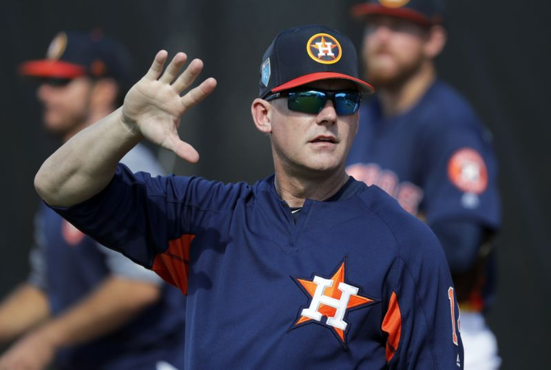

Baseball teams are always looking for an advantage. Any little thing that can be done to give them a leg up over the competition (or even just a toe up) is fully examined. We’ve seen defensive shifting become routine, and focusing launch angle has spread to hitters like wildfire.
Now we know what the next big thing could be, and it shouldn’t surprise anyone that it’s coming from the Houston Astros, who have been on baseball’s bleeding edge for a few years now. ESPN’s Buster Olney reported on Tuesday that after experimenting with it this spring, manager A.J. Hinch will employ a four-man outfield in certain scenarios during the regular season.
The four-man outfield is a data-driven attempt to limit big damage and take advantage of the fly ball trend by placing more men on one side of the outfield. And it’s more than a little complicated. First, the hitter at the plate would need to hit a lot of fly balls, preferably to his pull side. The guy on the mound would need to be a fly ball pitcher as opposed to one who induced more ground balls. Olney also mentioned that the game conditions would have to be just right: two outs with little chance of a rally.
If all that is right, then Hinch could employ the four-man outfield. Here’s how the alignment would work against left-handed hitters, according to Jake Kaplan of The Athletic:
"In the alignment, the Astros leave the left side of the infield completely open, as if begging the hitter to lay down a bunt. Shortstop Carlos Correa shifts to the right of second base, and second baseman José Altuve shades to his left and back into shallow right field"
So Correa essentially becomes the second baseman, and Altuve becomes the fourth outfielder. The point is to put as many fielders as possible where the hitter is most likely to hit the ball.
The four-man outfield, despite requiring the right combination of pitcher, batter and game situation, could work. And if it does, other teams will jump on board and start using it. That’s how a new idea spreads in baseball and becomes merely routine. We’ve seen it throughout time, like with heavy use of the shift, or focusing on launch angle in hitting, or eating a million hot dogs and trying to hit home runs all the time. (That last one’s Babe Ruth.) Baseball is this amorphous blob that can take in new ideas and expand to accommodate them. It’s done that throughout history, and there’s something so beautiful about that.
But baseball will always catch up. It goes beyond the normal ebb and flow of the game over time — it’s baseball’s own form of evolution. Hitters doing too much damage? Pitchers have to adjust. The ones that do will be successful, and the ones that don’t, well, that’s natural selection.
The four-man outfield is the latest idea to make it to the baseball field, and if it works, it could be around for a long time. But the moment it starts working, hitters will start trying to figure out how to beat it. It might take a long time — a bunt can beat the shift, though the number of players who use that strategy is depressingly small — but baseball always catches up. Whether MLB decides to implement a dead ball instead of a juiced one, or hitters realize that concentrating on launch angle and hitting the ball into the air all the time isn’t the best idea, baseball is always trying to evolve and error correct.
And that’s because the best baseball is balanced baseball. All the problems will never be solved. The game is designed that way. Hitters hit and pitchers pitch, and nothing and no one is ever foolproof.
This is how baseball progresses. This is how the game is made better. If the four-man outfield is overwhelmingly successful, hitters will have to learn how to beat it or retire trying. That’s baseball. So here’s to the next new idea in baseball, and the many ways it’ll change the game. And here’s to the guy who figures out how to beat it.
- - - - - - - - - - - - - - - - - - - - - - - - - - - -